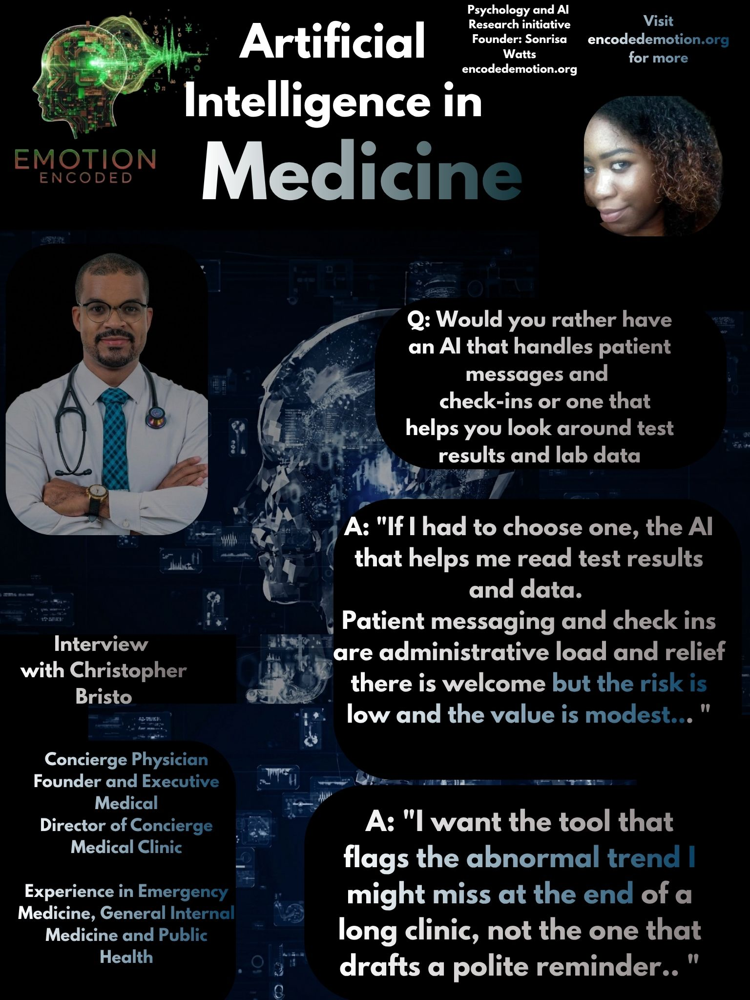

Dr. Christopher Bristo, Founder and Executive Medical Director of The Concierge Medical Clinic, brings over 12 years of experience in emergency care, general internal medicine, and public health to his practice. Attending to the personalized healthcare needs of his patients, he shares how concierge medicine may soon be supported by digital tools. I recently spoke with Dr. Bristo to discuss his professional perspective on the integration of artificial intelligence within the high-stakes environment of concierge medicine.
Question: For your practice, would you rather have an AI that handles patient messages and check-ins, or an AI that helps you look at test results and lab data?
"If I had to choose one, I would take the AI that helps me read test results and lab data. The reasoning is straightforward. Patient messaging and check-ins are an administrative load, and relief there is welcome, but the risk is low and the value is modest. Test interpretation is different. That is where clinical judgement concentrates, and that is where a well governed second read genuinely improves safety, particularly in a setting where I may be the only physician covering a wide catchment."
Dr. Bristo prioritizes clinical safety over administrative convenience. He views AI as a vital tool for flagging abnormal trends that might be missed during a long clinic shift, while maintaining that the physician must remain the sole accountable authority for all final decisions.
Question: When using AI, do you prefer a tool that works quietly in the background without you noticing, or a partner that talks to you and asks for your input on decisions?
"I prefer the partner that talks to me and shows its reasoning. In medicine you cannot audit what you cannot see, and a tool that works silently in the background is a tool I cannot question. For anything clinical, I want it to surface why it reached a conclusion and to invite my input before I act. That said, I do not need a conversation for every task."
Dr. Bristo draws a clear line based on the stakes of the task. While quiet automation is acceptable for administrative work, he insists on transparency and dialogue for clinical decisions. He rejects the black box model, preferring a partner that makes its reasoning visible for human audit.
Question: What is the main thing that would make you quit using an AI tool immediately?
"Confident fabrication. The moment a tool presents invented or unverifiable information as fact, particularly on a clinical matter, I am finished with it. In this work a fluent wrong answer is more dangerous than an obvious one, because it earns a trust it has not deserved. The other immediate deal breaker is any compromise of patient confidentiality."
Dr. Bristo identifies "confident fabrication" as the primary threat to clinical practice. He notes that a fluent, incorrect answer is more dangerous than an error that is clearly visible. Furthermore, he maintains a strict zero-tolerance policy regarding the security and lawfulness of patient data.
RESEARCH VERDICT
The concierge physician views AI as a collaborative partner rather than an administrative assistant. Dr. Bristo’s perspective suggests that for AI to be integrated into high-stakes practice, it must prioritize clinical safety through radical transparency and auditability. Trust is conditional; it is earned only when the tool provides verifiable reasoning and demonstrates an uncompromising commitment to patient confidentiality.
Sonrisa Watts // Emotion Encoded // 2026